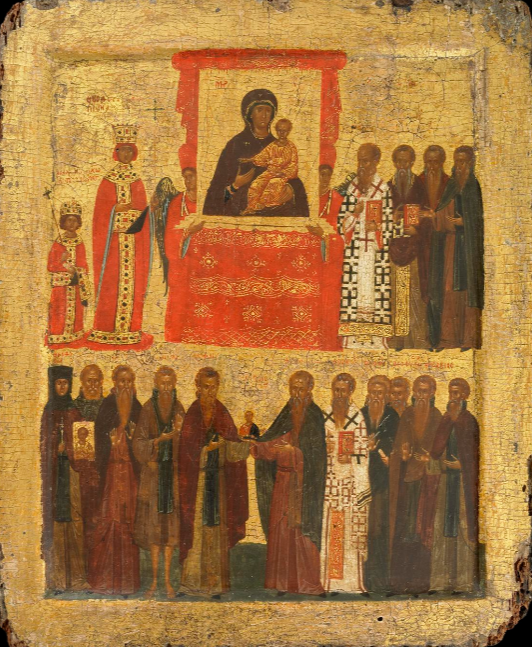

Είναι αλήθεια ότι με την πάροδο του χρόνου δεισιδαίμονες προλήψεις συνδέθηκαν με την προσκύνηση των εικόνων. Πιστοί των λαϊκότερων κυρίως στρωμάτων και μοναχοί αφελείς και απαίδευτοι απέδιδαν ολοένα και μεγαλύτερη σημασία στην προστατευτική δύναμη όχι πια του εικονιζόμενου προσώπου, αλλά του ίδιου του αντικειμένου, της φορητής εικόνας, τελώντας παράλογες πράξεις που θύμιζαν ειδωλολατρία. Έτσι, κατά τη βάπτιση έφερναν την εικόνα στη θέση του αναδόχου, έπαιρναν από το χρώμα της ξύσμα, το οποίο αναμίγνυαν στη θεία μετάληψη ή το μεταχειρίζονταν για θεραπευτικούς σκοπούς.
Ιστορία του Ελληνικού Έθνους, τ. Θ΄.Αρχείο πηγών
Οι πηγές μένουν ανοιχτές σε όλη την αποστολή. Η ανάγνωσή τους αφήνει την πρόοδο των σταδίων ως έχει.
Εικονομάχοι
Οι εικόνες υποκαθιστούν τα είδωλα και, άρα, αυτοί που μας προσκυνούν είναι ειδωλολάτρες. Μας δεν πρέπει να προσκυνούμε κατασκευάσματα των ανθρώπινων χεριών και κάθε είδους ομοίωμα. Πληροφόρησέ με ποιος μας κληροδότησε αυτή την παράδοση, δηλαδή να σεβόμαστε και να προσκυνούμε κατασκευάσματα χεριών, ενώ ο Θεός απαγορεύει την προσκύνηση, και εγώ θα συμφωνήσω ότι αυτό είναι νόμος του Θεού.
Επιστολή του Λέοντος Γ΄ στον πάπα Γρηγόριο Β΄Εικονόφιλοι
Στα παλιά τα χρόνια ο Θεός, ο ασώματος και απερίγραπτος, δεν απεικονιζόταν καθόλου. Τώρα όμως που ο Θεός εμφανίστηκε με σάρκα και έζησε ανάμεσα στους ανθρώπους, ζωγραφίζω την εικόνα Του, όπως την είδα στο πρόσωπο του Ιησού. Δε λατρεύω την ύλη, αλλά τον δημιουργό της ύλης. Αυτόν που για χάρη μου έγινε ύλη και καταδέχτηκε να κατοικήσει στην ύλη και μέσω αυτής κατεργάστηκε τη σωτηρία μου. Δεν θα πάψω να σέβομαι την ύλη, την αγιασμένη με τη σάρκωση του Κυρίου, που έγινε αιτία της σωτηρίας μου.
Ιωάννης Δαμασκηνός, Προς τους διαβάλλοντας τας ιεράς εικόναςΈβδομη Οικουμενική Σύνοδος
Πιστεύουμε, όπως είδαν στα οράματά τους οι προφήτες, όπως δίδαξαν οι απόστολοι, όπως παρέλαβε την πίστη η Εκκλησία και οι διδάσκαλοί της τη διατύπωσαν, όπως συμφώνησαν οι Εκκλησίες της οικουμένης, όπως έλαμψε η θεία χάρη, όπως η σοφία με παρρησία ομολόγησε και ο Χριστός βράβευσε. Έτσι σκεφτόμαστε, μιλάμε και κηρύσσουμε τον Χριστό, τον αληθινό Θεό μας, και τα έργα των αγίων του, τιμώντας τους με λόγια, με γραφές, με σκέψεις, με πνευματικές θυσίες, με ναούς και εικονίσματα. Σεβόμαστε και προσκυνούμε τον Χριστό, επειδή είναι Θεός και Δεσπότης· τιμούμε τους αγίους, επειδή είναι πραγματικοί υπηρέτες του κοινού μας Δεσπότη, απονέμοντάς τους σχετική προσκύνηση και όχι λατρεία.
Απόσπασμα από το Συνοδικό της Ζ΄ Οικουμενικής ΣυνόδουΣτην πραγματικότητα η εικονομαχία μοιάζει να εξηγείται από εβραϊκές και μουσουλμανικές επιδράσεις που υπερεκτιμούσαν το απρόσιτο και ανείπωτο του Θεού σε βάρος της Ενσάρκωσης. Η εικονομαχία ήταν επίσης μια αντίδραση ενάντια στη μερικές φορές ειδωλολατρική λατρεία των εικόνων και στη μόλυνση της λατρείας αυτής από την ιδέα της μαγείας: φτάναμε έτσι στο να συγχέεται η εικόνα με την ευχαριστία και ορισμένοι ιερείς αναμίγνυαν τα θεία δώρα με τμήματα από εικόνες. Η Ορθοδοξία υπερπήδησε αυτές τις δυο αντικρουόμενες τάσεις, επιβεβαιώνοντας τη Χριστολογική βάση της εικόνας. Έδειξε ότι η εικόνα είναι κατεξοχήν ο ίδιος ο Χριστός.
Olivier Clément, Η Θεολογία της ΕικόναςΒυζαντινή αγιογραφία
Εικόνα φιλοτεχνημένη με αυγοτέμπερα και φύλλα χρυσού σε ξύλινο πάνελ, προετοιμασμένο με γύψο (gesso) και λινό ύφασμα. Η πίσω όψη αποτελείται κυρίως από γυμνό ξύλο, με δύο οριζόντιους πήχεις. Το θέμα της εικόνας είναι ο Θρίαμβος της Ορθοδοξίας (η αποκατάσταση των εικόνων στο Βυζάντιο το 843, έπειτα από δεκαετίες επίσημης απαγόρευσής τους — η λεγόμενη περίοδος της Εικονομαχίας, που ξεκίνησε περίπου το 730). Στο κέντρο της άνω ζώνης εικονίζεται η Παναγία η Οδηγήτρια (η οποία φυλασσόταν στη Μονή των Οδηγών στην Κωνσταντινούπολη). Οι εικονόφιλοι πίστευαν ότι η εικόνα αυτή είχε φιλοτεχνηθεί από τον Ευαγγελιστή Λουκά, και η ύπαρξή της χρησιμοποιήθηκε ως βασικό επιχείρημα υπέρ της νομιμότητας των εικόνων των αγίων. Η εικόνα τοποθετείται σε βάση και πλαισιώνεται από κόκκινες κουρτίνες, ενώ εκατέρωθεν στέκονται δύο φύλακες με φτερά και κόκκινα καλύμματα κεφαλής. Στα αριστερά εικονίζεται η Αυτοκράτειρα Θεοδώρα, μητέρα και επίτροπος του ανήλικου Μιχαήλ Γ΄ (ο οποίος ήταν τριών ετών το 843). Στα δεξιά βρίσκεται ο Πατριάρχης Μεθόδιος μαζί με τρεις ακόμη εικονόφιλους. Στην κάτω ζώνη, από αριστερά προς τα δεξιά, εικονίζονται: η Αγία Θεοδοσία, κρατώντας εικόνα του Χριστού· ο Άγιος Ιωαννίκιος· ο Άγιος Στέφανος ο Νέος· ο Άγιος Θεόδωρος ο Στουδίτης —οι οποίοι κρατούν από κοινού μια εικόνα του Χριστού—, ο Άγιος Θεόδωρος και ο Άγιος Θεοφάνης, γνωστοί ως «Γραπτοί»· ο Άγιος Θεοφύλακτος· και ο Άγιος Αρσάκιος.

The British Museum, «Ο Θρίαμβος της Ορθοδοξίας», αρ. H_1988-0411-1, περ. 1400, Κωνσταντινούπολη. Άνοιγμα στο μουσείο